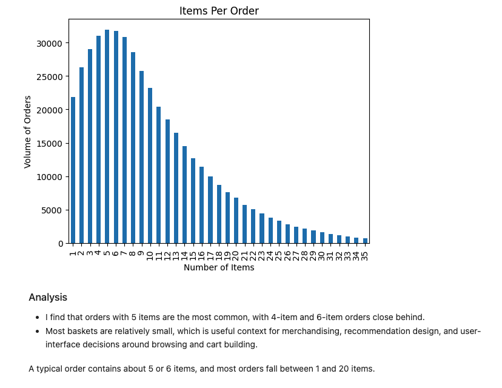
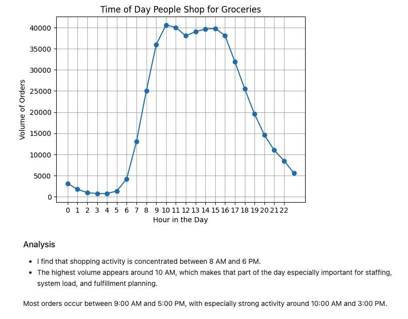
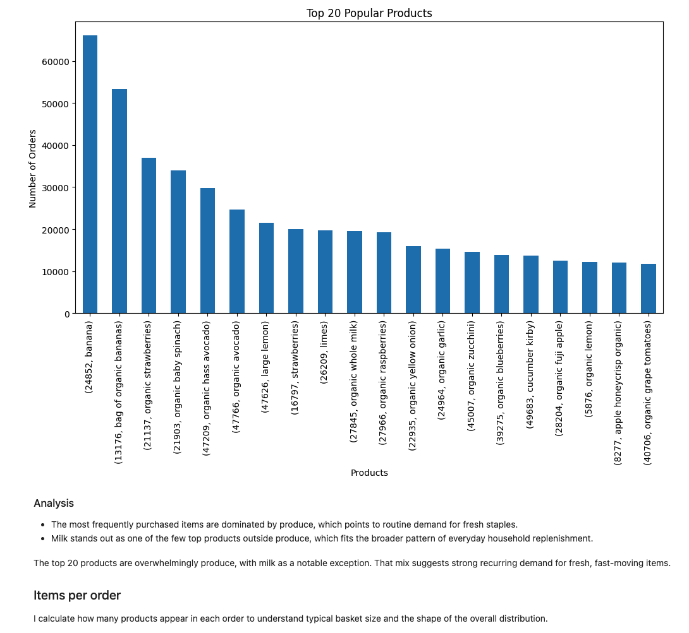
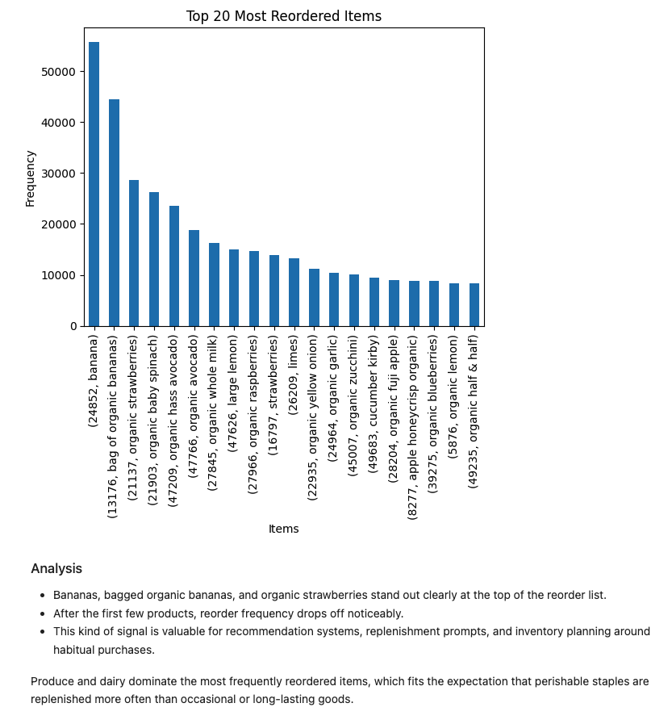

Project Overview
This project analyzes Instacart order data to uncover patterns in customer purchasing behavior, including when customers shop, how frequently they reorder, which products are most popular, and how basket size varies across orders.
The analysis follows a complete data science workflow: data inspection, cleaning, transformation, and exploratory visualization to translate quantitative findings into meaningful business insights.
Key Findings
Shopping Patterns

Customer activity follows a strong daily rhythm, with peak ordering concentrated between 8 AM and 6 PM. The highest volume occurs around 10 AM, making that window critical for staffing and fulfillment planning. Orders drop sharply after 5 PM and remain minimal overnight.
Basket Composition

Most orders contain 5-6 items, with the majority falling between 1-20 items. This insight is valuable for merchandising strategies, recommendation engine design, and user-interface decisions around browsing and cart building.
Product Popularity

The most frequently purchased items are overwhelmingly produce, with milk as a notable exception. This pattern points to strong recurring demand for fresh, fast-moving staple items and everyday household replenishment.
Reorder Behavior

Bananas, bagged organic bananas, and organic strawberries dominate the reorder list. Perishable staples and produce are replenished far more frequently than occasional or long-lasting goods. This signal is valuable for recommendation systems, replenishment prompts, and inventory planning around habitual purchases.
Methodology
- Data inspection using pandas .info() and .head() methods
- Contextual missing value handling and duplicate removal
- Multi-table merging and data transformation
- Temporal analysis of ordering patterns by hour and day
- Product-level reorder rate calculations
- Distribution analysis and visualization with Matplotlib
Tools & Technologies
View Full Project
Explore the complete notebook with all code, visualizations, and detailed explanations:
View on GitHub →